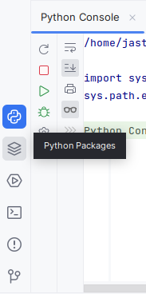
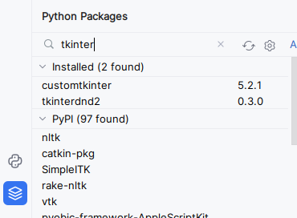
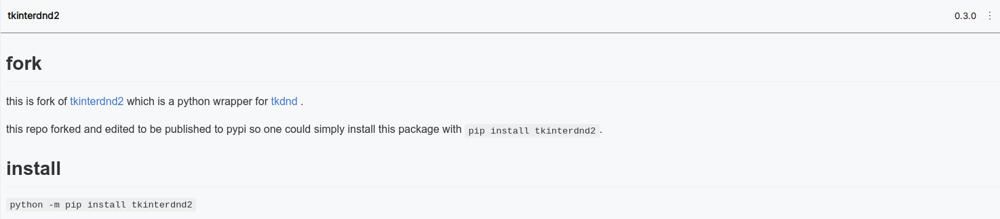
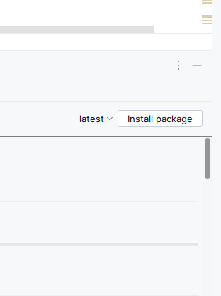
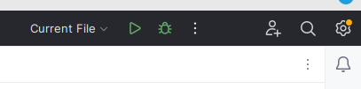

Pour stopper votre conversation avec le chatbot dites lui bye Pour valider votre réplique cliquez sur le bouton valider ou sur votre touche entrée Pour enregistrer la réplique du chatbot vis-àvis de votre précédente réplique cliquez sur le bouton C'est bien ou C'est OK Si vous n'avez pas de logiciels pour exécuter un programme en python,
Pour stopper votre conversation avec le chatbot dites lui bye Pour valider votre réplique cliquez sur le bouton valider ou sur votre touche entrée Pour enregistrer la réplique du chatbot vis-àvis de votre précédente réplique cliquez sur le bouton C'est bien ou C'est OK Si vous n'avez pas de logiciels pour exécuter un programme en python, rentrez la commande python3 /home/nom d'utilisateur/chemin d'accés au fichier/chatbot_V_5.py ou chatbot_V_6.3.0.py ou chatbot_V_7.0.0.py dans votre terminal
Si votre terminal ne peut pas exécuter de programme python ou que le module tkinter nécessaire au programme n'est pas présent sur votre ordinateur,
il y a différentes solutions :
-----------------------------------
installer seulement les moduls demandés via le terminal comme suit :
--> tapez les commandes suivantes dans votre terminal en fonction des moduls requis par votre version :
- pip install customtkinter
- pip install tkinterdnd2
- pip install tkinter
--> vous pouvez également installer l'IDE Spyder en entrant la commande : pip install Spyder
--> pour exécuter le programme dans Spyder, cliquez sur le triangle vert
-->/!\ il est possible que votre terminal bloque le téléchargement des moduls et de Spyder,
vous devez alors contourner ce blocage en suivant les instructions de votre terminal
-----------------------------------
installer directement l'interface PyCharm et les moduls demandés comme suit :
--> pour accéder au site d'installation de PyCharm cliquez ici
(attention, installez bien la version dont le nom de votre système d'exploitation est contenu dans le nom du fichier)
--> et si vous voulez plus d'information sur ce logiciel, cliquez ici
--> maintenant que c'est fait vous allez installer tkinter selon les étapes suivantes:
1)Ouvrez PyCharm
2)Cliquez sur "Python Packages en bas à droite de votre écran"

3)Puis, tapez "tkinter" dans la barre de recherche en haut à gauche de la fenetre en bas

4)Sélectionner ensuite le modul "tkinterdnd2" ou "tkinter" ou "customtkinter en fonction de la version choisie"

5)Enfin, cliquez sur "install package"

Une fois fois le fichier ouvert via le lien du menu cliquez sur le triangle vert en haut à gauchepuis, sélectionner "Current File" avec le menu déroulant à gauche du triangle

-----------------------------------
Tout les documents doivent être dans le
même dossier!!!!(comme fourni dans le .zip)